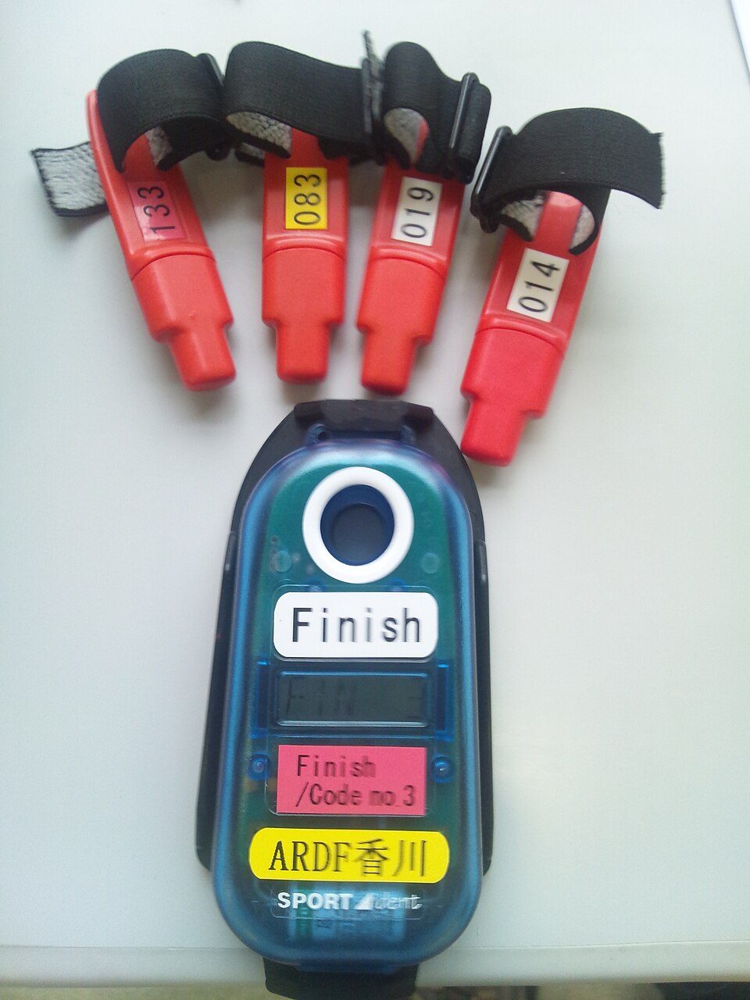
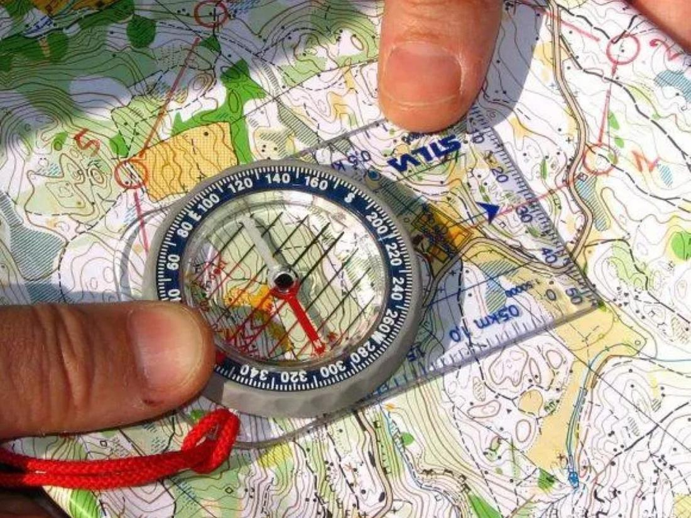
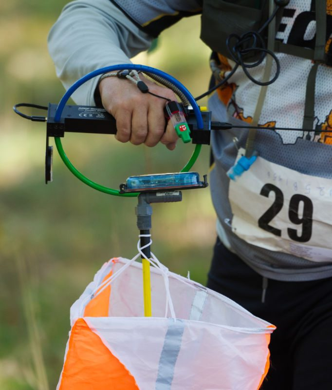
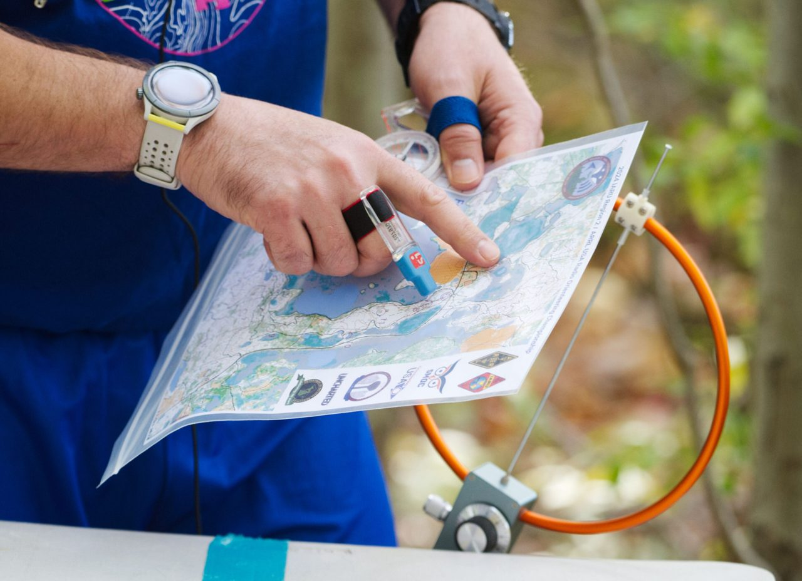
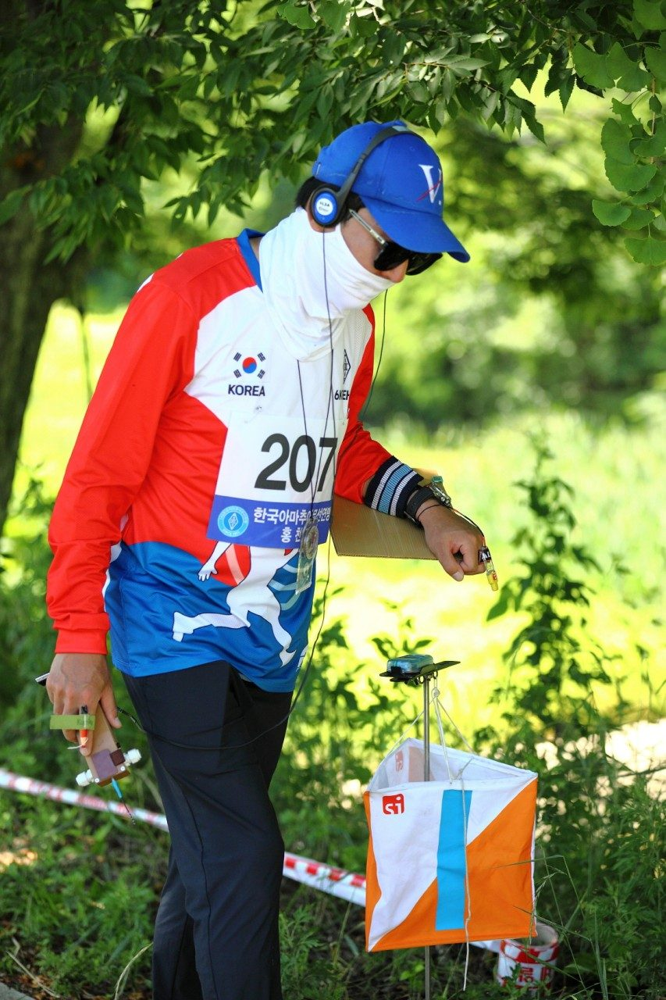
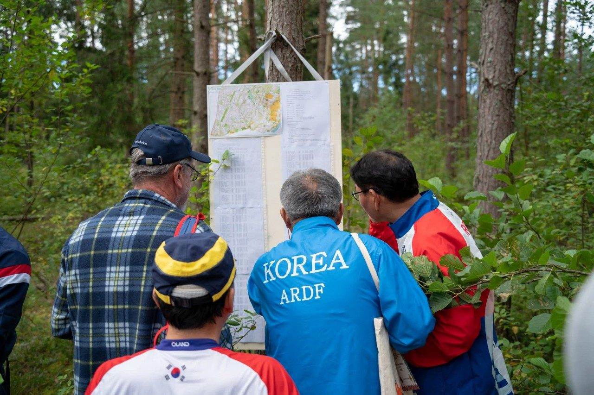
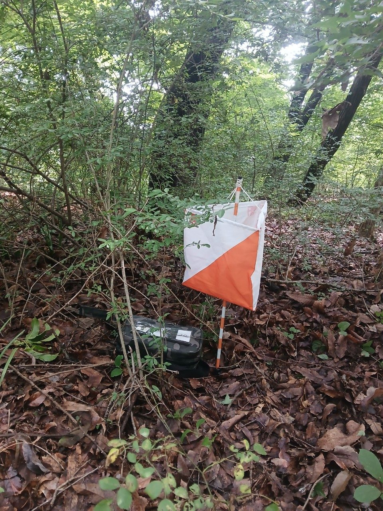
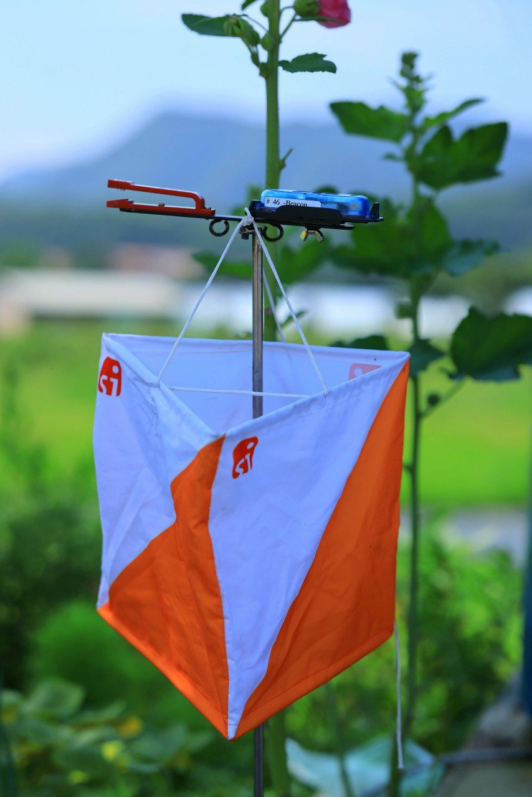
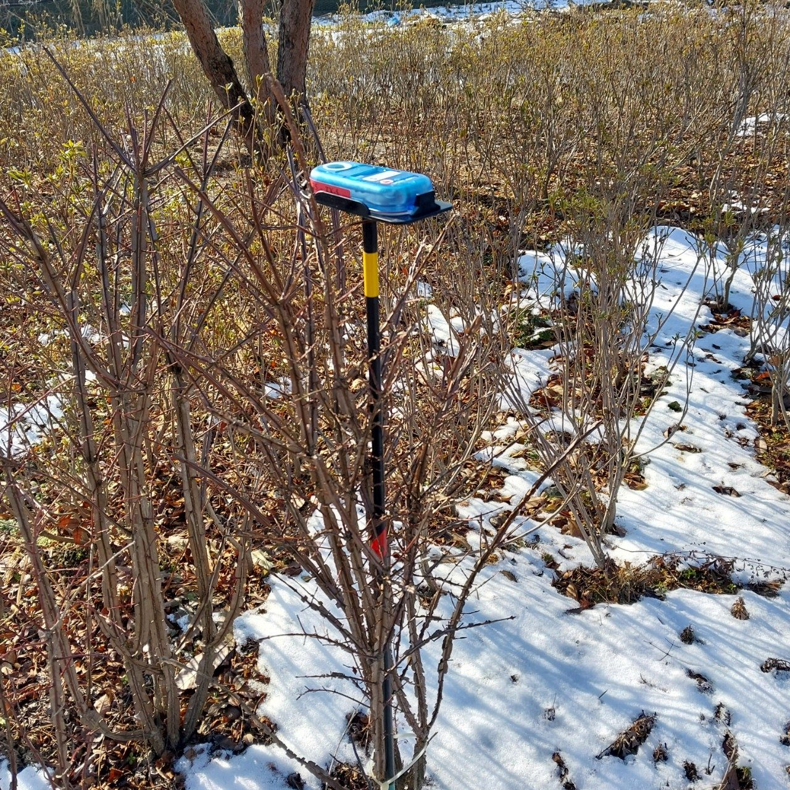
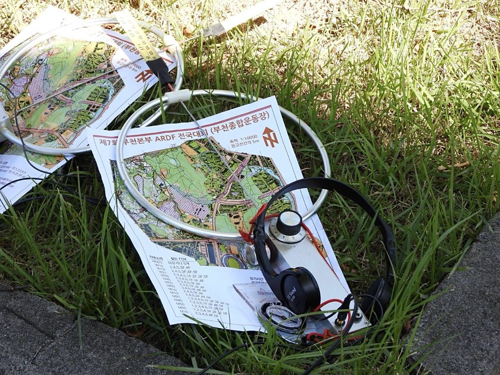

ARDF (Amateur Radio Direction Finding) 실전 Q&A
입문, 수신기와 안테나, 송신기 신호 청음, 독도법과 삼각측량, 경기 규칙, 세부 종목까지 ARDF 경기에 필요한 49가지 내용을 질의응답(FAQ) 형태로 정리했습니다. 모스 식별음은 답변 안의 버튼으로 직접 들어 볼 수 있습니다.
ARDF(아마추어 무선 방향탐지)란?
지도와 나침반, 지향성 안테나가 달린 수신기를 들고 숲속에 숨겨진 무선 송신기(여우, Fox)를 찾아 제한 시간 안에 결승선으로 돌아오는 무선 스포츠입니다. 전파 오리엔티어링(Radio Orienteering) 또는 여우사냥(Foxhunting)이라고도 부르며, 경기 참가에는 무선 자격증이 필요하지 않습니다. POTA·SOTA·WWFF·IOTA가 교신 실적을 쌓는 어워드 프로그램이라면, ARDF는 성별·연령 등급별로 기록을 겨루는 경기 종목이라는 점이 다릅니다.
종목 연혁: 1950년대 말 북유럽과 동유럽에서 시작되어 1961년 스웨덴 스톡홀름에서 첫 유럽선수권대회가 열렸습니다. 나라마다 달랐던 경기 규칙은 국제아마추어무선연맹(IARU)이 표준화했고, 이 표준 규칙으로 1980년 폴란드 체트니에보(Cetniewo)에서 첫 세계선수권대회가 열렸습니다. 2000년 중국 난징 대회는 유럽 밖에서 열린 첫 세계선수권대회였습니다.
참가 전 꼭 확인해야 할 장비

방향탐지 수신기
안테나 조립형 전용 수신기 (수신기 신청 시 현장 대여)

전자 기록 카드 (SI-Card)
손가락에 끼우고 거치대에 1초 태깅하면 통과 기록을 자동 저장

지도 & 플레이트 나침반
5m 단위 등고선 특수 지도와 방위각을 작도할 투명 나침반
자주 묻는 질문
분류 1: 기본 개념 & 입문
Q01ARDF(아마추어 무선 방향탐지)가 정확히 무엇인가요?
지도, 나침반, 지향성 안테나가 달린 수신기를 들고 숲속이나 야외에 숨겨진 무선 송신기(폭스/여우)를 찾아 정해진 시간 내에 골인 지점으로 돌아오는 스포츠입니다.
흔히 전파 오리엔티어링(Radio orienteering) 또는 여우사냥(Foxhunting)으로 불립니다.
흔히 전파 오리엔티어링(Radio orienteering) 또는 여우사냥(Foxhunting)으로 불립니다.
Q02아마추어 무선사 자격증이 꼭 있어야 참여할 수 있나요?
일반적인 대회 참가나 체험 같은 단순 수신(경기 참가)은 무선사 자격증이 없어도 누구나 가능합니다. 단, 송신기(폭스)를 직접 설치·운용하거나 일부 국가대표 선발전 등 특수 규정이 적용되는 대회에서는 아마추어무선기사 자격이 필요할 수 있습니다.
Q03체력이 약하거나 달리기를 못해도 할 수 있나요?
전혀 문제되지 않습니다. 단순히 빨리 달리는 것보다 전파의 방향을 정확히 측정하고, 지도에서 송신기의 위치를 파악해 가장 효율적인 이동 경로를 설계하는 독도법과 루트 전략이 50% 이상을 차지합니다.
Q04일반 오리엔티어링(OL)과는 무엇이 다른가요?
일반 오리엔티어링은 지도 위에 컨트롤 포인트(목표 지점)의 위치가 원으로 인쇄되어 있어 목표까지 최단 경로의 길을 찾는 능력(독도법)이 주가 됩니다. 반면 ARDF는 지도에 목표 지점이 전혀 표시되어 있지 않으며, 오직 수신기로 전파의 방향을 측정해 스스로 지도 위에 위치를 찾아내야 합니다.
Q05처음 입문하려면 어떻게 시작해야 하나요?
한국아마추어무선연맹(KARL) 본부 및 지부, 또는 ARDF 위원회에서 주최하는 대회나 강습회에 직접 참가하는 것이 가장 좋습니다. 장비 대여와 함께 지도 보는 법(독도법)과 신호 탐지 기초를 배울 수 있습니다.
Q06남녀노소 누구나 같이 경쟁하나요?
모든 연령과 성별이 한 번에 같은 순위로 경쟁하지 않습니다. 성별과 만 나이를 기준으로 M19, M21, M40, M50, W21, W35 등 세분화된 등급(카테고리)별로 나뉘어 공정하게 순위를 매깁니다.
분류 2: 수신기 & 안테나 테크닉
Q07대회에서는 어떤 주파수 대역을 쓰나요?
세계아마추어무선연맹(IARU) 국제 표준 규격으로 주로 3.5MHz (80m 밴드, 단파)와 144MHz (2m 밴드, 초단파) 두 가지 대역을 사용합니다.
Q083.5MHz와 144MHz는 찾는 느낌이 어떻게 다른가요?
3.5MHz는 전파가 지면을 따라 안정적으로 흐르고 장애물 반사가 적어 방위각 측정이 정직합니다. 144MHz는 직진성이 강해 바위, 철탑, 능선 등에 반사되는 반사파(Echo)가 자주 발생하므로 직접 신호와 반사 신호를 가려내는 테크닉이 중요합니다.
Q09수신기는 어떤 것을 쓰나요? 시중 라디오로도 가능한가요?
일반 라디오로는 불가능합니다. 특정 방향의 신호만 강하게 잡아주는 지향성 안테나(페라이트 바/루프 또는 야기 안테나)와 신호 세기를 줄여주는 감쇠기(Attenuator)가 내장된 ARDF 전용 수신기를 써야 합니다.
Q10수신기는 국내외에서 어떤 기종들을 많이 쓰나요?
유럽 및 국내 현장에서는 체코산 SUPERFOX (3,5MX, 145DX)나 러시아산 Altai, 중국제 입문 키트 등이 널리 쓰입니다. 특히 SUPERFOX 시리즈는 감도와 신뢰성이 검증되어 많은 선수가 사용합니다.
Q113.5MHz 수신기에서 '센스 안테나(Sense Antenna)' 스위치는 왜 켜고 끄나요?
3.5MHz 페라이트 바 안테나는 앞뒤 180도 양방향으로 신호가 잡히는 8자형 패턴을 가집니다. 이때 수직 와이어(센스 안테나)를 켜면 신호 패턴이 하트형(Cardioid)으로 합성되어 신호가 '앞에 있는지 뒤에 있는지' 180도 방향 모호성을 판별할 수 있습니다.
Q12144MHz 수신기 안테나는 왜 가로(수평)가 아니라 세로(수직)로 세워 드나요?
ARDF 규정상 144MHz 송신기는 수직 편파(Vertical Polarization) 안테나로 신호를 보냅니다. 송신과 수신의 편파 방향이 일치해야 편파 손실 없이 최대 감도로 수신되므로, 야기 안테나의 엘리먼트를 지면과 수직으로 세워 탐색합니다.
Q13감쇠기(Attenuator)를 조절하는 올바른 타이밍은 언제인가요?
송신기에 접근하여 수신기 볼륨이 최대치로 포화되어, 안테나를 어느 방향으로 돌려도 소리 크기 차이가 느껴지지 않을 때입니다. 소리가 '겨우 알아들을 수 있을 만큼' 감도를 낮춰야 안테나 회전 시 최대점(Peak)이나 최소점(Null)이 명확해집니다.
Q14헤드폰은 어떤 것을 고르는 것이 좋나요?
숲속 나뭇가지에 걸리지 않도록 선이 튼튼한 제품을 씁니다. 귀를 완전히 막는 밀폐형보다는 주변 소리(발소리, 차량 등 위험 요소)를 함께 인지할 수 있는 가벼운 오픈형/온이어 헤드폰이 안전상 권장됩니다.
Q15지도판(Map Board)은 왜 팔(손목)에 고정하나요?
수신기와 나침반을 든 상태로 산악 지형을 뛰어야 하므로 두 손이 자유롭지 못합니다. 지도판을 한쪽 팔에 밴드로 고정하면 달리는 중에도 나침반을 대고 즉시 방위각을 작도할 수 있어 시간을 단축시킵니다.
분류 3: 송신기 신호 & 청음
Q16'여우(Fox)'는 무엇이고 어떻게 찾나요?
숲속에 숨겨진 소형 자동 무선 송신기입니다. 보통 5개의 송신기가 번갈아 가며 1분씩 신호를 보내며, 수신기의 지향 안테나를 돌려 신호가 가장 강한 방향을 지도에 작도하여 찾아갑니다.
Q17송신기 전파 출력은 대략 몇 와트(W)인가요?
클래식 기준 3.5MHz 송신기는 약 1W ~ 3W 내외, 144MHz 송신기는 약 0.5W ~ 1.5W 내외의 소출력입니다. 배터리를 아끼고 경기 구역 내에서만 적절히 수신되도록 제어됩니다.
Q18송신기는 1분 동안 모스 신호만 계속 나오나요?
아닙니다. 경기 규정상 처음 약 50~55초 동안은 MOE 같은 식별 신호를 반복 송출하고, 나머지 약 5초 동안은 다음 신호 송신을 위하여 지속적인 연속 톤(단일 삐- 소리)을 보내줍니다.
Q19왜 송신기 신호는 하필 'MO'로 시작하나요?
모스 부호로 M은 대시 두 개(--), O는 대시 세 개(---)로 이루어져 소리가 길고 묵직합니다. 잡음이 심한 숲속 환경에서도 노이즈와 쉽게 구별되며 귀로 식별하기 가장 유리하기 때문입니다.
Q20숨겨진 송신기(여우)는 몇 개이고 소리로 어떻게 구별하나요?
정규 클래식 경기에서는 총 5개(1~5번)가 설치되며, 1분씩 순서대로 5분 주기로 신호를 송출합니다. 실제 헤드폰에서는 700Hz 표준 비프음으로 들립니다. 끝에 붙는 점(Dot) 소리의 개수(1개~5개)를 귀로 세어 번호를 즉시 판별합니다.
• 1번: MOE (-- --- .)
• 2번: MOI (-- --- ..)
• 3번: MOS (-- --- ...)
• 4번: MOH (-- --- ....)
• 5번: MO5 (-- --- .....)
아래 버튼을 눌러 각 번호별 실제 식별음을 직접 확인해 보세요.
• 1번: MOE (-- --- .)
• 2번: MOI (-- --- ..)
• 3번: MOS (-- --- ...)
• 4번: MOH (-- --- ....)
• 5번: MO5 (-- --- .....)
아래 버튼을 눌러 각 번호별 실제 식별음을 직접 확인해 보세요.
점(.) 개수로 번호를 구별하는 식별음 (700Hz)
Q21피니시 비콘(Beacon)은 무엇이고 일반 여우와 어떻게 다른가요?
일반 여우(1~5번)는 1분씩 번갈아 켜지지만, 골(Finish) 지점에 있는 비콘은 별도 전용 주파수에서 경기 내내 쉬지 않고 연속 송출됩니다. 뒤에 점 부호 없이 묵직한 대시 부호로만 이루어진 MO (-- ---) 신호를 치며, 경기를 마치고 복귀하는 선수의 유도 신호 역할을 합니다. 길을 잃었을 때 이 신호만 잡으면 본부로 복귀할 수 있습니다.
피니시 비콘 MO 송출음 (700Hz)
Q22[청음] 송신기에 가까워질수록 수신기 소리는 어떻게 변하나요?
송신기 수십 미터 이내로 근접하면 신호가 회로 한계치를 넘어 '찌직-' 하며 찌그러지거나 귀가 아플 정도로 포화됩니다. 이때 즉시 감쇠기(Attenuator) 다이얼을 돌려 감도를 깎아내야 깨끗한 톤으로 방향을 잡을 수 있습니다.
분류 4: 독도법 & 삼각측량
Q23ARDF 경기용 지도는 일반 등산 지도와 무엇이 다른가요?
국제오리엔티어링연맹(IOF) 표준 규격 지도(축척 1:10,000 또는 1:15,000)를 씁니다. 달릴 수 있는 숲(흰색), 통과가 어려운 가시덤불(진한 녹색), 바위, 습지 등 보행 속도에 영향을 주는 식생 정보 및 상세 지도기호가 정밀하게 기재되어 있습니다.
Q24피크(Peak)와 널(Null)의 차이는 무엇인가요?
피크법(peak)은 신호가 '가장 크게 들리는 방향'을 찾는 방법으로 대략적인 방향을 빠르게 잡을 때 씁니다. 널법(Null)은 신호가 '완전히 사라지는 최소점'을 찾는 방법으로, 소리가 끊기는 각도가 매우 예리하므로 정밀한 선을 그을 때 사용합니다.
Q25삼각측량(Triangulation)은 구체적으로 어떻게 하나요?
위치 A에서 특정 여우의 방위각을 나침반으로 재어 지도에 선을 긋습니다. 그다음 다른 위치 B로 이동해 같은 여우의 방위각을 다시 그립니다. 두 개 이상의 직선이 교차하는 지점이 예상 위치입니다. 오차를 줄이기 위해 제3의 지점 C에서 한 번 더 그어 교차 삼각 지점을 확인합니다.
Q26144MHz에서 반사파(Echo)에 속지 않는 요령이 있나요?
계곡이나 암벽 앞에서는 반사파가 직진파보다 강할 수 있습니다. 능선이나 시야가 트인 곳으로 이동해 재측정해야 합니다. 또한 수신기를 들고 좌우로 5~10m 이동했을 때 방위각이 비정상적으로 돌아간다면 반사파로 판단해야 합니다.
Q27송신기가 반경 50m 안에 들어왔을 때 최종 접근 요령은?
지향성이 무너지므로 감쇠기(Attenuator)를 조절해 신호음을 최대한 줄입니다. 안테나를 천천히 돌려 소리가 뚜렷한 쪽의 자연 은폐물(쓰러진 나무, 큰 바위 뒤, 덤불 틈)을 육안으로 관찰하며 접근합니다.
분류 5: 경기 진행 & 규칙 타임라인
Q28경기 전 수신 점검 구역(Receiver Testing Area)에서는 무엇을 하나요?
출발 대기선 주변에 주최 측이 테스트 송신기를 켜두는 구역입니다. 경기장에 들어가기 전 수신기 배터리 잔량, 헤드폰 음질, 튜닝 다이얼 및 안테나 결합 상태를 점검할 수 있는 필수 절차 구역입니다.
Q29출발하자마자 바로 뛰어가야 하나요?
아닙니다. 출발선(스타트)에서 1번부터 5번 송신기가 한 바퀴(5분) 동안 차례대로 울릴 때까지 나침반과 수신기로 방위각을 측정해 지도에 선을 긋는 것이 정석입니다. 대략적인 위치를 지도에 그려놓고 최적의 방문 순서를 정한 뒤 출발해야 체력과 시간을 아낍니다.
Q30송신기는 1번부터 순서대로 찾아야 하나요?
아닙니다. 번호 순서와 상관없이 제한 시간 내에 본인 등급에 지정된 송신기를 가장 많이, 가장 빠른 시간 내에 찾고 골인하는 사람이 이깁니다. 따라서 지형과 거리를 고려한 루트 선택(Route Choice)이 핵심입니다.
Q31송신기 주변에 갔는데 플래그가 안 보여요. 보통 어디에 숨겨두나요?
ARDF 규정상 송신기는 땅속에 파묻지 않으며, 반경 수 미터 내에 오면 육안으로 식별 가능한 바위 뒤나 통나무 아래에 둡니다. 주변에 주황색/흰색 오리엔티어링 플래그 삼각기둥과 전자 펀치가 함께 걸려 있으므로 색상을 잘 살펴야 합니다.
Q32송신기를 찾았다는 것은 어떻게 증명하나요?
송신기 옆에 설치된 전자식 체크 펀치(SportIdent 카드 태그)에 손목 태그를 접촉해 기록 칩에 저장하거나, 수동 펀치로 종이 기록 카드에 고유 핀 구멍을 뚫어 방문을 인증합니다.
Q33다른 선수를 뒤따라가서(피치히치) 찾으면 안 되나요?
규칙상 엄격히 금지됩니다. 타인의 수신 소리를 엿듣거나 다른 선수를 고의로 미행하는 행위는 실격(Disqualification) 사유가 됩니다. 각자 독립적으로 방향을 잡고 탐색해야 합니다.
Q34제한 시간(Time Limit)을 1초라도 넘기면 어떻게 되나요?
보통 제한 시간(120분 또는 140분)을 1초라도 초과하여 골인하면 아무리 많은 송신기를 찾았더라도 규정상 전체 실격(Over Time / DNF) 처리됩니다. 따라서 송신기를 덜 찾았더라도 시간 내에 복귀하는 것이 순위 유지에 절대적으로 유리합니다.
[참고: 경기 공식 기록지 주요 약어]
• DNS (Did Not Start): 출발하지 않음 (기권 또는 불참)
• DNF (Did Not Finish): 완주하지 못함 (제한시간 초과, 중도 포기 등)
• DSQ / DQ (Disqualified): 실격 (피치히치 미행 등 경기 규칙 위반)
• OT (Over Time): 제한 시간 초과 (DNF 처리의 세부 사유)
• DNS (Did Not Start): 출발하지 않음 (기권 또는 불참)
• DNF (Did Not Finish): 완주하지 못함 (제한시간 초과, 중도 포기 등)
• DSQ / DQ (Disqualified): 실격 (피치히치 미행 등 경기 규칙 위반)
• OT (Over Time): 제한 시간 초과 (DNF 처리의 세부 사유)
분류 6: 세부 종목 & 필드 안전
Q35클래식(Classic) 종목의 기본 진행 방식과 경기 시간은?
넓은 산악 지형(4~8㎢)에 5개의 송신기를 분산 배치하고, 정해진 제한 시간(통상 120분 ~ 140분) 내에 송신기를 탐색하는 대표 정규 종목입니다. 3.5MHz와 144MHz 각각 별도의 경기로 치러집니다.
Q36스프린트(Sprint)는 클래식과 무엇이 다른가요?
도시 공원이나 좁은 숲(0.5~1㎢)에서 열리는 초단거리 종목입니다. 3.5MHz 단파 대역만 사용하며, 우승권 기록이 20분 ~ 30분 내외로 매우 빠르게 전개됩니다. 숲을 달리는 순발력과 신속한 방위각 판단력이 핵심입니다.
Q37스프린트의 신호 송출 주기는 왜 12초인가요?
클래식은 1개 송신기가 1분씩 울려 한 바퀴에 5분이 걸리지만, 스프린트는 12초씩 송출되어 5개 송신기가 1분(60초) 만에 한 바퀴를 돕니다. 고속 모스 부호가 사용되므로 10초 이내에 방위각 측정을 끝내야 합니다.
Q38스프린트의 '슬로우 여우(TX1~TX5)', '패스트 여우(TX 1F~TX 5F)', '스펙테이터 컨트롤(S)'이란?
스프린트는 보통 2개 주파수를 씁니다. 1단계 주파수(여우 1~5번)를 찾은 뒤 관중석 앞을 통과하는 스펙테이터 컨트롤(S:중간 비콘)을 찍고, 그 자리에서 수신기 주파수를 2단계 주파수로 전환해 나머지 송신기(1F~5F)를 탐색하고 골인하는 구조입니다.
Q39[청음] 스프린트 종목의 고속(Fast) 모스는 클래식과 속도가 얼마나 다른가요?
스프린트는 12초 만에 한 송신기의 차례가 끝나므로 일반 클래식 경기보다 모스 타음 속도가 약 1.5배~2배 빠릅니다. 귀로 빠르게 톤을 캐치하는 훈련이 필요합니다. 아래에서 5번 여우(MO5) 신호의 속도 차이를 직접 비교해 보세요.
5번 여우(MO5) 기준 속도 비교
Q40폭스오링(Foxoring)은 어떤 방식으로 진행되나요?
오리엔티어링과 여우사냥의 결합 종목입니다. 지도 위에 인쇄된 작은 원 지점까지 지도와 나침반만 보고 먼저 달린 뒤, 그 반경 내에서 초저출력 여우 신호를 귀로 찾아내는 방식입니다.
Q41폭스오링 지도에 인쇄된 원(Circle)의 중심에 여우가 있나요?
아닙니다. 원의 정중앙에 송신기가 있지 않습니다. 원 내부(반경 약 50~100m)의 임의의 자연 은폐물(바위 뒤, 쓰러진 통나무, 덤불 속 등)에 숨겨져 있습니다. 따라서 원 중심만 무작정 파고들지 말고, 원 경계선에 들어서는 순간부터 360도 전파 스캔을 시작해야 합니다.
Q42폭스오링은 신호가 나올 때까지 클래식처럼 5분을 기다려야 하나요?
기다릴 필요가 없습니다. 클래식과 달리 각 송신기가 상시 연속 송출(Continuous TX)되거나 매우 빠른 초단위 주기로 울립니다. 순환 주기를 기다리며 서 있을 필요 없이 원 안에 진입하자마자 즉시 탐색이 가능하므로 경기 템포가 매우 빠릅니다.
Q43폭스오링 원 사이를 이동할 때의 주법(러닝 요령)은?
원 밖에서는 신호가 들리지 않으므로 수신기에 신경 쓰지 않아도 됩니다. 원과 원 사이는 지도와 나침반만 보고 전력 질주(순수 오리엔티어링 주력)하고, 원 경계선에 진입하는 직전(어택 포인트)에 감쇠기를 세팅하고 탐색 모드로 전환하는 것이 기록 단축의 핵심입니다.
Q44폭스오링에서의 수신기 조작 테크닉은 클래식과 어떻게 다른가요?
수십 미터 이내의 초근접 탐색이므로 센스 안테나는 거의 켜지 않습니다. 페라이트 바 안테나의 정밀한 널(Null) 소멸점 특성과 감쇠기(Attenuator)를 빠르게 깎아내는 손놀림만으로 1~2분 안에 송신기 플래그를 펀칭합니다.
Q45초보자가 처음 출전하기 가장 부담 없는 종목은?
클래식(Classic) 경기 또는 근린공원에서 열리는 폭스오링(Foxoring) 경기를 추천합니다. 3.5MHz 대역은 장애물 반사파가 적어 전파 방향이 정직하고, 공원 폭스오링은 산길 조난 위험 없이 안전하게 길 찾기와 전파 수신 방법을 익히기 좋습니다.
Q46복장과 신발은 어떤 것을 신어야 하나요?
가시덤불과 잡목에 긁히지 않도록 질긴 긴팔과 긴바지 기능성 의류를 입어야 합니다. 신발은 미끄러운 산길과 낙엽에서 접지력을 보장하는 트레일 러닝화 또는 밑창 접지력이 좋은 운동화를 추천합니다.
Q47비가 오는 우천 시에도 경기가 진행되나요?
태풍이나 폭우 수준이 아니라면 기본적으로 진행됩니다. 수신기 기판에 빗물이 스며들지 않도록 방수 비닐 팩이나 랩으로 감싸고, 지도 역시 방수 지도 케이스에 넣어 습기를 차단해야 합니다.
Q48경기 중 산속에서 길을 완전히 잃었을 때는 어떻게 하나요?
1) 수신기를 비콘(Finish) 주파수로 전환하여 피니시 신호 방향을 잡고 복귀합니다.
2) 신호가 안 잡히면 큰 임도나 능선으로 올라가 출발 전 주최 측이 공지한 안전 복귀 방향(Safety Line)을 따라 이동합니다.
3) 비상시 호루라기를 3회 연속 불어 구조를 요청합니다.
2) 신호가 안 잡히면 큰 임도나 능선으로 올라가 출발 전 주최 측이 공지한 안전 복귀 방향(Safety Line)을 따라 이동합니다.
3) 비상시 호루라기를 3회 연속 불어 구조를 요청합니다.
Q49국내 공식 대회나 연습 모임 정보는 어디서 확인하나요?
사단법인 한국아마추어무선연맹(KARL) 본부 웹사이트 공지사항, 각 시·도 지부 게시판, 연맹 산하 ARDF 위원회 커뮤니티 공지를 통해 연간 전국대회 일정 및 지역 연습회 정보를 확인할 수 있습니다.
현장에서 보게 되는 실제 모습







